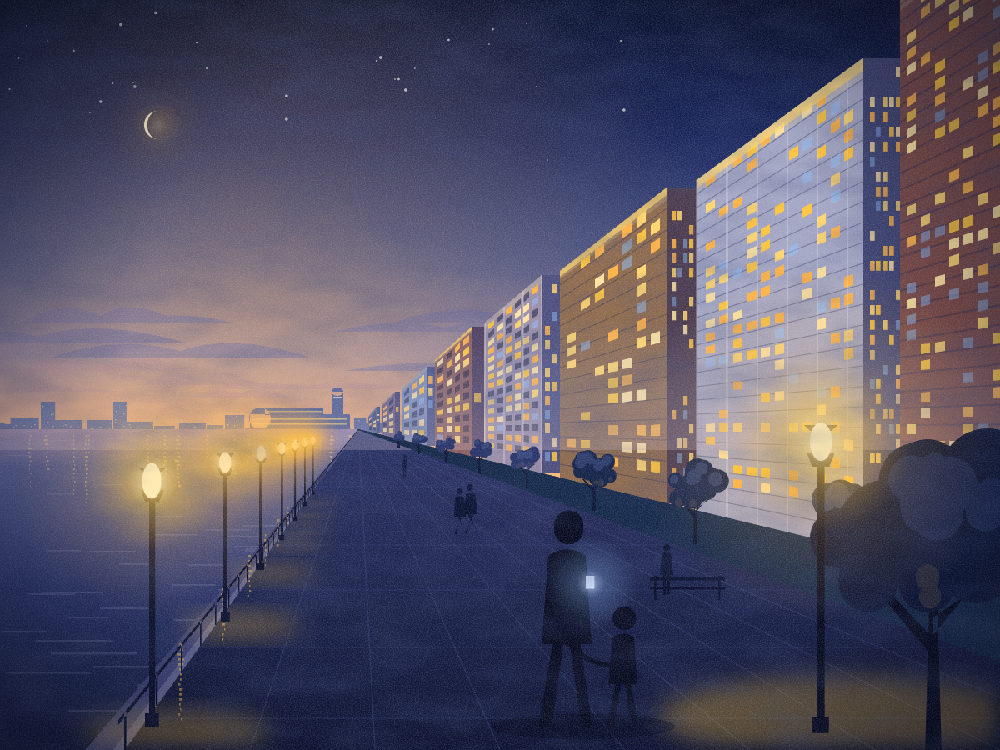
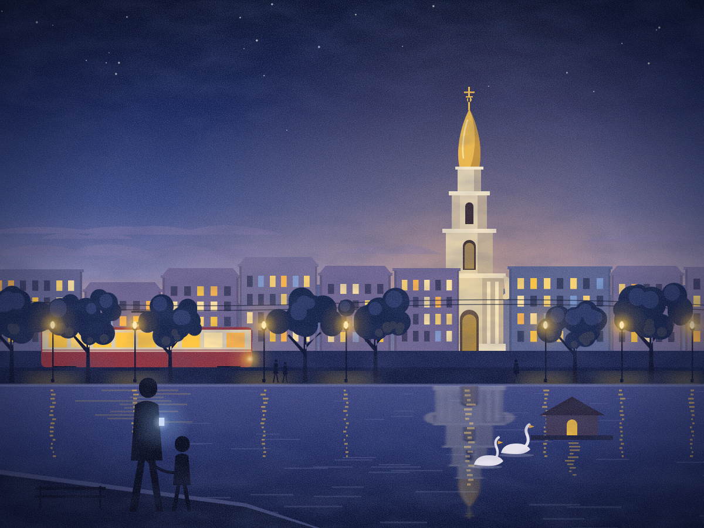
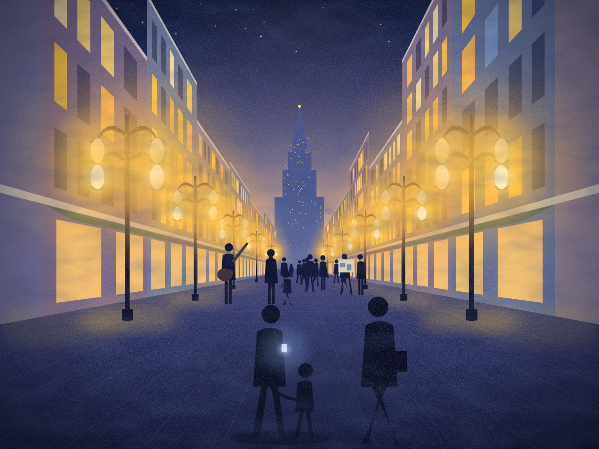

Квесты-прогулки по Москве
Каждый квест — отдельный район, своя история и своя тайна. Гид и расписание не нужны: вы играете в браузере телефона, когда удобно. 990 ₽ — один код на всю компанию.
-

Дело №1 Синяя птица
ЗИЛАРТ · юг МосквыКто дал честное слово в письме 1931 года и сдержал ли его? Выясните на улицах ЗИЛАРТа вместе с голубем-сыщиком.
Скоро в продаже990 ₽ за делоКто дал слово? -

Дело №2 Башня выше Ивана Великого
Чистые пруды и ПокровкаКто знал заранее, что в Меншикову башню ударит молния? Проверьте на Чистых прудах, кара ли это за гордыню.
В разработкеКто знал заранее? -
Дело №3 Туман в овраге
КоломенскоеИз какого года гонец, что вышел из тумана в Коломенском? Сверьте его рассказ с церквями и воротами и проводите домой.
В разработкеКакой год у гонца? -

Дело №4 Стёртые имена
Красная площадь и Александровский садКто вписал чужие записи в обмеры Красной площади 1936 года? Перемерьте сами и решите, что вернуть на место.
В разработкеЧья это рука? -

Дело №5 Фальшивый лист
Китай-городКто подбрасывает ошибку в лист новичка? 1887 год, типография на Никольской, и новичок здесь вы.
В разработкеЧья это ошибка? -

Дело №6 Загадки Турандот
Арбат и арбатские переулкиКакая из трёх масок унесла у принцессы Турандот восьмую загадку? Сверьте их показания с Арбатом и верните пропажу.
В разработкеКто унёс загадку? -

Дело №7 Шестнадцатая сестра
ВДНХ · север МосквыКто из шестнадцати золотых сестёр с фонтана ВДНХ пишет открытки? Снимите для них выставку и найдите её в кругу.
В разработкеКто пишет открытки? -
а где бы вы хотели?
Предложите свой квест
Знаете район, где за каждым углом своя история? Напишите нам: может быть, следующее дело будет там.
Предложить район
- ЗИЛАРТ — бывший автозавод за Третьим кольцом, дело №1. скоро в продаже
- Красная площадь — у стен Кремля, дело №4.
- Китай-город — сразу к востоку от Кремля, дело №5.
- Арбат — к западу от Кремля, дело №6.
- Чистые пруды — к северо-востоку от центра, дело №2.
- ВДНХ — на севере, между Третьим кольцом и МКАД, дело №7.
- Коломенское — на юге, на берегу Москвы-реки, дело №3.